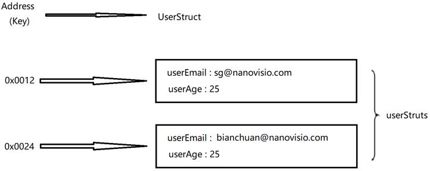

摘要：Ethereum是Block Chain的一种实现，而Block Chain在存储方面跟接近于一种分布式账本。每个加入到Ethereum网络中的节点都会有一份COPY。数据是存储在网络中的所有节点中。在这个方面，与传统的关系数据库有着完全不一样的特点。那么在基于Solidity的编程中，也会有着不一样的思路。这篇文章，主要是分享一下编程思路上与传统关系数据库的CRUD(Create, Read, Update, Delete)处理上的区别。
本篇是一个系列：
第一篇谈一谈Ethereum的数据（变量）存储的位置（Data Location），以及几个常用的数据类型。
第二篇会谈一谈Create，Read和Update的方法。
第三篇会谈一谈如何Delete.
Ethereum 的 Memory 意味着什么？
在传统的软件开发环境中，Memory通常意味着 Physical Memory和 Virtual Memory的概念。 Physical Memory 即为物理内存，跟计算机上的物理内存有直接关系。虚拟内存则是相对于软件的内存寻址空间，是软件本身可以使用的Memory的概念。即使是存储在数据库上的数据，在被软件使用的时候，也是必须先读取到内存中，才能被软件（代码）使用。那么在Ethereum中，Memory又有着怎么样的含义。
在Ethereum 环境中，有着Ethereum Virtual Machine。在EVMs上，有着3个区域可以存储数据(Data Location)。
Storage。Storage 是用于存放Contract State变量的地方。每一个Contract都拥有自己的Storage。Storage的数据对于这个Contract来说是持久的，类似于一个Static的数据，被多个client调用的时候是累加的。存储在Storage的数据，在Block Chain上的开销是最大的。它大概需要20,000 gas来初始化Storage Location，并将其全部清零。一旦变量存放在Storage上，那么它将维护在BlockChain上面。这样在读写的时候，就会带来实际的开销(gas) – 这就意味着要花钱。如果在Storage上读取一个word, 需要花费200 gas, 而在Memory中只需要3 gas.
Memory。Memory 在Contract中用来存放临时数据，在External Function调用的时候会被反复擦除。在Block Chain上的开销相对会小。然而，Memory只有在smart contract被执行的时候，在context内部会维持它的值。一旦执行完成，这些数据就消失了。
Stack。 Stack上的开销非常小，几乎是免费的，但是只能使用比较有限的变量数目。理论上，Stack的最大容量是1024个item. 不过只有顶部的16个比较容易获取，越往下，读写的效率越低。
变量存储在哪些区域，是取决于Context。变量按照它的Type和使用方法，会有默认的数据存储区域。但是对于Complex Data Type, 例如 string, array 和 structs, 可以在申明变量的时候通过指定修饰符(appending) storage 或者memory 来指定存放的区域。一个function的参数(parameters) 以及它的返回值，默认是存放在memory上。本地变量(local variable) 则是默认存放在Storage中。一个状态变量(state variable) 则是强制存放在storage中。
Data Location 同时还会影响到assignment的行为。
- Storage variables 和 Memory variables 之间的assignment 总是会创建一份独立的copy。但如果是Complex Type, 从一个memory-stored complex type到另外一个memory-stored complex type的 assignment。那么是不会创建一个独立的copy。
- 对于state variable ， assignment总是创建一份独立的copy。
- 无法将memory-stored complex type 赋值给Local Storage variable。
- 如果将state variables 赋值给local storage variables，这个local storage variable 将会是一个指针类型，并且指向 state variables。
总的来说，EVM上面的Data Location 分为 Storage, Memory 和 Stack。从开销（gas）上看 Storage > Memory > Stack. 谈到gas，就是钱。而且这部分钱，是在smart contract 发布之后，每次运算的时候都需要付费的部分。说到钱，在开发的时候就应该仔细的分析各种Data Location的优劣。
CRUD – Create, Read, Update, Delete
现在流行的应用程序基本都是要进行数据库操作，其中最基本的操作就是CRUD。在Block Chain中的Smart Contract，也是需要做类似的操作。所不同的是，大部分的应用程序的CRUD是在数据库中进行。对应的，Smart Contract的CRUD是在on-chain table-like storage上面进行。
我这里假设一个最常见的流程：
- 在on-chain storage上创建一个比较简单的entity ，类似于table或者collection。Entity的内部定义了一些简单的字段(field), 类似于column 。
- 插入一条记录，这条记录带有Key (Primary Key)。
- 通过Key (Primary Key)，在storage中获取这个记录。
- 获取这个entity总共插入了几条记录。类似于select count(*) from table 。
- 读取所有的数据记录。类似于select * from table 。
- 更新一条记录。Update。
举个栗子
这个例子中，要创建一个entity用来存储用户的数据记录。这个记录保护下面一些fields :
- Wallet address，这个field是用来作为一个primary key存在。
- Email address，一个field。
- Age，好吧，另一个field。
这个例子很简单，可以扩展到更多的应用场景中，无非就是多加几个字段，增加一些应用场景相关的逻辑。
Mapping
Solidity的Mapping，有点类似于C#/JAVA的hashtable。提供了一个通过Key来查找value的方法。创建一个键值对的时候，value的初始值被值为全0 (byte-representation is all zeros)。Key本身并不会保存在mapping中，而是保存了Key值对应的keccak256 hash值，用来查找对应的value。
1 | mapping (address => uint) userBalances; |
上面代码所发生的事情是：
- 变量名userBalances将会分配到一个地址
- Mapping的键值是address 类型，例如 msg.sender
- Mapping的value是一个unsigned integer类型
你可以把mapping想象成一个巨大的DataTable，主键的类型是一个Address类型。第二个column 则是一个unsigned integer类型。所有的记录(records)，在没有被赋值的情况下，初始值被赋值为全0。
可以用下面的代码来赋值和取值：
1 | address key = msg.sender; // the key is an address |
不过要注意到mapping的一些限制。由于mapping并不会存储key本身，而是存储了key对应的keccak256值。那么事实上mapping并没有直截了当的方法知道哪些key已经被写入了。也不能知道已经有多少个key被写入。即，没有userBalances.Length 或者 userBalances.Count。同时，也不能iterate整个keys。所以，foreach也不能用了。
Array
没错，就是那个Array。Solidity的Array即可以支持编译时指定固定长度的，也支持动态长度。为了解决上面Mapping的一些问题，在这个例子里面，我们会采用动态长度的Array。用动态长度Array来未经排序的keys的列表，这样我们就可以知道有多少个keys已被插入到mapping中。
1 | address[] userIndex; |
通过下面的代码，则可以拿回来key的内容：
1 | address firstUserAddress = userIndex[0]; |
通过下面的代码，可以拿到这个Array里面已经保存了多少条记录：
1 | uint count = userIndex.length; |
下面的代码则是通过index拿到对应的item：
1 | address firstUserAddress = userIndex[0]; |
在用法上，Solidity 的Array与C#/Java的Array没有太大区别。值得注意的是，如果是storage Array， 那么它是存放任意类型，甚至是其他的Array, mapping 或者structs。如果是memory Array，就会有一些限制，必须是一个ABI type, 而且必须是一个public-visible function的参数。
声明一个固定长度的Array，可以写出 T[K]，T为类型，K是fixed size。动态类型的声明方式为T[]。同样，也支持二维Array, 例如unit[][5]。
Struct
Struct这个类型，熟悉C#/JAVA的人并不陌生，它可以用来定义新的类型。
Struct里面可以包含其他的类型作为它的成员。但是它并不能把自己的类型作为它的成员之一。这个限制是必须的，因为如果这么做的话，Struct的size无法确定，并且在计算它的size的时候进入循环调用而出现无限大的size的情况。
下面的代码中定义一个简单的结构用来记录email和age：
1 | struct UserStruct { |
通过下面的代码可以声明一个变量：
1 | UserStruct aUser; |
下面的代码则是赋值：
1 | aUser.userEmail = emailInHex; |
通过下面的代码，可以将这个struct的对象存放到mapping中：
1 | mapping(address => UserStruct) userStructs; |
比如说，将要插入的数据布局会是下图这样：

通过下面的方式就可以读取/写入对应的数据：
1 | bytes32 hisEmail = userStructs[hisAddress].email; // get |
Sonic Guo